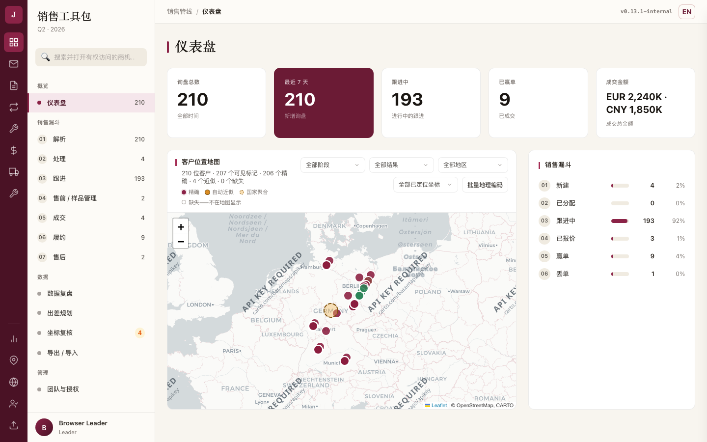
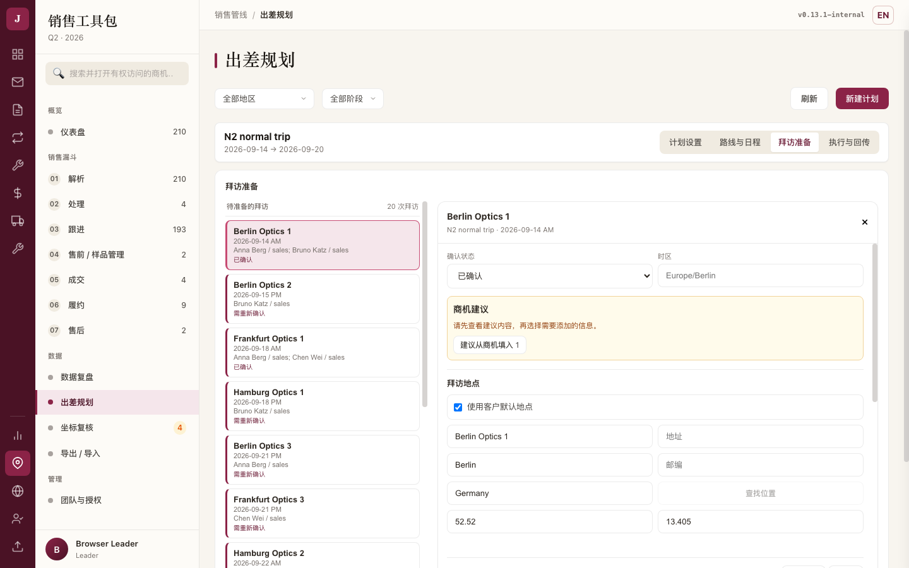

A. 快速体验路线（约 10 分钟）
目的：确认这台电脑上的 JPT 从零到一条完整商机是通的。全程用虚构公司名。
| ✓ | 做什么 | 怎么算通过 |
|---|---|---|
| 打开 JPT，登录自己的账号 | 进入仪表盘；左侧每个模块后面都有一个数字（新库里都是 0） | |
| 「+ New Inquiry」建一条商机：填公司名、国家城市、联系人邮箱、这条询价是关于什么 | 保存后这条商机自动打开在右侧，提示里带编号（例如 JPT-2609-0001） | |
| 回到「待处理」队列 | 刚建的这条就在列表里，左侧"待处理"的数字 +1 | |
| 在这条商机的「Follow-ups」里记一条跟进 | 历史里出现这条；这条商机从"待处理"进到"跟进中"，两边数字同时变 | |
| 回仪表盘，点漏斗里的某个阶段 | 打开的列表正好是那个阶段的那些商机，条数与漏斗上的数字一致 | |
| 关掉 JPT 再打开 | 刚才建的商机与跟进都还在 |

B. Leader 验收清单
| ✓ | 做什么 | 怎么算通过 | 不通过时报什么 |
|---|---|---|---|
| 建客户与商机，指派给某位销售 | 面板与列表都显示新负责人；重开这条商机还是他 | 商机编号、指派前后各是谁 | |
| 「Team & Authorization」→「Add member」登记一位成员 | 成员出现在列表里，状态是未激活 | 填了哪些字段、页面提示原文 | |
收到成员的 .jptreq 后签发 .jptauth | 下载到 .jptauth；成员表里出现这次签发记录 | 提示原文（不要把 .jptauth 本身发回来） | |
| 「Export / Import」给某位销售导出定向 JSON 包 | 包里只有这位销售的商机 | 期望几条、实际几条 | |
| 收回销售/技术的包：先预检，再导入 | 预检不写库；导入报告里的新增/更新条数，和列表里实际多出来的条数一致 | 预检报告与导入报告的数字、列表实际条数 | |
| 导入前看一眼预检里的警告 | 如果提示"这个文件里是空的、本地有值，导入会清空：…"，说明这些字段会被对方的文件清掉——确认过再导 | 警告原文与你最后的选择 |
C. Sales 验收清单
| ✓ | 做什么 | 怎么算通过 | 不通过时报什么 |
|---|---|---|---|
| 登录后看「跟进」队列 | 只出现指派给自己的商机 | 看到了哪一条不该看到的（写编号） | |
| 记一条跟进，填下一步与下次跟进日期 | 保存后历史里有；换一条商机再回来还在 | 商机编号、你填的内容、实际显示的内容 | |
| 在同一条商机上请技术支持（建一件样品/售前任务） | 任务出现在「样品」队列，左侧数字 +1 | 建任务时的提示原文 | |
| 填一次金额与币种 | 写了报价单号会进"成交"队列；写了成交金额会进"履约"队列；没填币种的地方不会自己补一个币种 | 你填了什么、页面显示成什么 | |
| 正在保存时试着改同一个表单 | 表单在保存期间是灰的、改不动；保存完自动恢复 | 是否能改动、有没有内容丢失 | |
| 导入 Leader 发来的 JSON 包（先预检） | 预检的预测与导入结果一致；同一个包再导一次不会翻倍 | 两次报告的数字 |
D. Tech 验收清单
| ✓ | 做什么 | 怎么算通过 | 不通过时报什么 |
|---|---|---|---|
| 登录后看左侧 | 只有"样品/售前""售后""导入导出"；没有"新建询价"按钮 | 多出来或少掉的模块名 | |
导入 Leader 给的 .jpttask：先预检，再导入 | 预检没有错误才允许导入；导入后任务出现在自己的队列里 | 预检报告原文 | |
| 打开一件任务，确认需求写的是什么 | 需求部分只读；能填的是执行结果那几栏 | 哪一栏该只读却能改 | |
| 填执行进展、下一步，保存 | 重开面板内容还在 | 任务对应的商机编号、你填的内容 | |
| 「Download .jptresult」回传 | 下载到 .jptresult 文件 | 提示原文 | |
| 故意选一个不对的文件再导一次 | 提示说得清是什么问题（例如"Invalid Tech task package JSON"），并且不让继续导入 | 提示原文与当时选的文件类型 |
E. 出差验收清单
| ✓ | 做什么 | 怎么算通过 | 不通过时报什么 |
|---|---|---|---|
| 建一个出差计划，加入几位成员 | 每位成员的出发地/返回地可以各写各的 | 哪位成员的哪一项存不住 | |
| 加几个客户停靠，其中一个约定固定时间并锁定 | 预览后，锁定的那次拜访仍在你约定的那个半天 | 约的是哪天哪个半天、实际排到了哪里 | |
| 加一个只属于自己的停留（酒店/机场/休息） | 只出现在你自己的日程里，不影响别人 | 谁的日程里多出了不该有的一段 | |
| 写一次拜访准备（议题、参会人、设备） | 保存时整块变灰；保存完换一条再回来，内容还在 | 客户名、你写的内容、回来后看到的内容 | |
| 导出"共享"版行程发给客户看 | 共享版里没有内部议题与内部判断；完整版里才有 | 共享版里出现了哪一句不该出现的 | |
| 导出现场工作簿，填一行结果，回传：先预检再提交 | 预检不写库；提交后那次拜访的结果就是你填的；同一份工作簿再传一次不会翻倍 | 拜访对应的客户名、你填的值、页面提示 | |
| 办公室那边也改过同一条时再回传 | 会被拦住并要求逐条选保留哪一边，办公室的内容不会被悄悄覆盖 | 提示原文与冲突涉及的字段 |

F. 反馈要写什么
把下面这段复制走，填好发给 Leader。六项缺一项都会让定位变慢。
G. 这份清单现在覆盖到哪里
已在开发方的隔离实例上逐条走通：A～E 的每一条，都在真实页面上跑过，并留了证据。
仍是 Pending：① 在另一台真实电脑上完成成员激活；② 原生安装包装好之后再走一遍上面的路线。
这两项没做完之前，谁都不要把这次升级说成"团队已验证"。
这一页不上传任何东西，也不会自动保存你的勾选；它只是一张可以打印的纸。